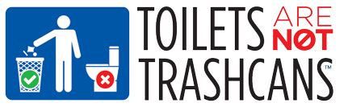

March 22, 2018
World Water Day – Can’t Flush This!

March 22nd is World Water Day, which makes it a great day for potty talk. While most of Finley’s readers live where water and sanitation are taken as a given, the professionals who keep it going have a request for you.
Our toilets, pipes and pumps are built to handle water and natural, biological waste and nothing more. Just because something goes down the drain or out of the toilet doesn’t mean the system can handle it. Somewhere along the way it’s likely to create blockages or entanglements that will eventually cause sewage backups, toilet blockages, and overflows into creeks and rivers. Nasty. They also ruin expensive equipment.
So, we ask you to take the potty pledge. No wipes (not even those that say “flushable”), no dental floss, no condoms, no tampons, no paper towels, no Q-tips, no cotton balls down the toilet. No fat or grease down the sink. No nothing that isn’t water, toilet paper, pee, or poop. Some countries don’t even allow toilet paper to be flushed. Don’t believe us? Hear what the plumbers have to say: https://www.youtube.com/watch?v=X-FB46km7bo